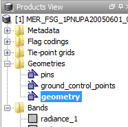
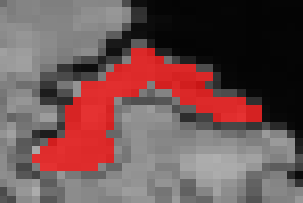
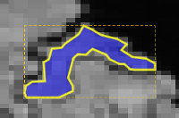

| Vector Data Management | |
|
Geometries are points, lines, multilines, polygons, or multipolygons. New geometries are always added to
the geometry container selected in the Vector Data node of the
Products View tool window as shown in the screenshot. If there isn't a
single geometry container yet, BEAM will create a default container named geometry. (This default behaviour can be customized in the BEAM configuration file ${BEAM_HOME}/config/beam.config.)
|
 |
The geometries in a geometry container can be directly used as a ROI for raster data analysis. Once a new geometry container has been added to the data product, an associated geometry mask is created by rendering the geometry onto the product's intrinsic raster data grid.
 |
 |
| Polygon geometry (vector data) | Resulting mask (raster data) |
The associated mask will always have the same name as the geometry container which created it and can serve as possible mask for the selected band or tie-point grid without any additional user interaction. Once the geometry is created (e.g. simply by drawing it, see below), its associated geometry mask can be used as ROI in the various analysis tools, such as the Statistics, Histogram, and Scatter Plot tool windows. Multiple geometries can be defined by creating new geometry containers as described below.
Once an image view is opened, new geometries are created by using the various drawing tools provided by VISAT through the Interactions Toolbar:
| Line: Press left mouse button for the start point, drag line to end point and release left mouse button. | |
| Polyline: Single-click (press and release) left mouse button for the start point, move line segment and click to add a vertex point, move to end point and double-click to finalize the polyline. | |
| Rectangle: Press left mouse button for the start point, drag line to end point and release left mouse button. | |
| Ellipse: Similar to rectangle; Press left mouse button for the start point, drag line to end point and release left mouse button. | |
| Polygon: Similar to polyline; Single-click (press and release) left mouse button for the start point, move line segment and click to add a vertex point, move to end point and double-click to close the polygon. |
Use the menu item Tools / Create Geometry Container or the corresponding tool button from the Interaction Toolbar to create a new geometry container.
| Clicking the button opens a dialog for creating a new geometry container. The user is prompted to enter a unique name for the new container. |
Geometries may be edited in a number of ways once they have been selected. Note that editing or deleting a geometry will automatically affect the mask associated with the geometry's container. Use the Select tool to select geometries which shall be edited:
| Select a single geometry by clicking it. Select one or more geometries by dragging a selection rectangle around them. Hold down the control key while selecting in order to add or remove geometries from the current selection set. |
Clicking selected geometries multiple times lets them step through a number of selection modes allowing for different editing modes which are further described below.
|  |  |
 |
| Selection mode 1 | Selection mode 2 | Selection mode 3 |
Move: Selected shapes can be moved to another location simply by dragging them with the mouse.
Move vertex: If single selected geometries are clicked once again, the selection mode changes depending on the geometry type. The first mode allows the user to move the vertexes of lineal and polygonal geometries by dragging the appearing vertex handles.
Add vertex: New vertexes can be inserted by pressing the Control key while clicking an existing vertex. The new vertex can now be dragged to its final location.
Remove vertex: Existing vertexes can be removed by dragging them onto their predecessor or successor vertexes by again pressing the Control key.
Scale: The next selection mode (click again) allows the user to scale the size of a geometry by dragging the appearing size handles.
Cut, Copy, Paste: Use these commands from the Edit menu or use the keys Control X, Control C, Control V to cut or copy geometries into the operating system's clipboard and to paste them into the same or another view.
Delete: Use the command from the Edit menu or use the Delete key. Mac-users can use fn + Backspace alternatively.
BEAM considers vector data that does not originate from satellite data as correlative data. BEAM supports exploiting of correlative data in some ways, for examples see the help for the Profile Plot dialog or the Correlative Plot dialog.
Pins and Ground Control Points are vector data treated as point geometries. Thus, geometry editing such as moving or deleting is the same as for other geometries as described above in chapter 'Working with Geometries'. Despite this, the pins and GCPs of a data product are still managed as described in Pin Management and GCP Management, respectively.
There are several built-in strategies for importing vector data in BEAM:
The Import Shapefile command allows the user to import geometries from ESRI Shapefiles(*.shp): Multiple geometries can be imported from a Shapefile. The geometry coordinates used in the Shapefile will be converted to the coordinates reference system used by the current data product. Note that BEAM does only offer limited support regarding the various style settings which may be attached to a specific Shapefile. It also currently ignores all the attribute data that usually come with a Shapefile. This may change in later BEAM versions.